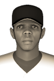

|
|
|  |
Lemoine Belts 5 Hits Friday, August 16th, 1895 It seemed that Detroit catcher Flavian Lemoine could do no wrong as the Lions KO'd the Frontenacs, 15-8 today. Lemoine rapped out 5 hits in 5 at-bats and seemed to know which pitches Frontenacs hurlers were throwing. "I think the Lions were stealing signs," growled one unhappy Chicagou fan after the game. "I just felt good today. I saw the ball well and just wanted to make good contact and put the ball in play," said the jubilant Lemoine in the postgame press interview. Flavian Lemoine singled in the 3rd, hit a two-run single in the 4th, doubled in the 5th, doubled in the 7th and hit an RBI single in the 8th. So far this year, Lemoine is batting .350 with no home runs and 32 RBIs. View Boxscore |


|